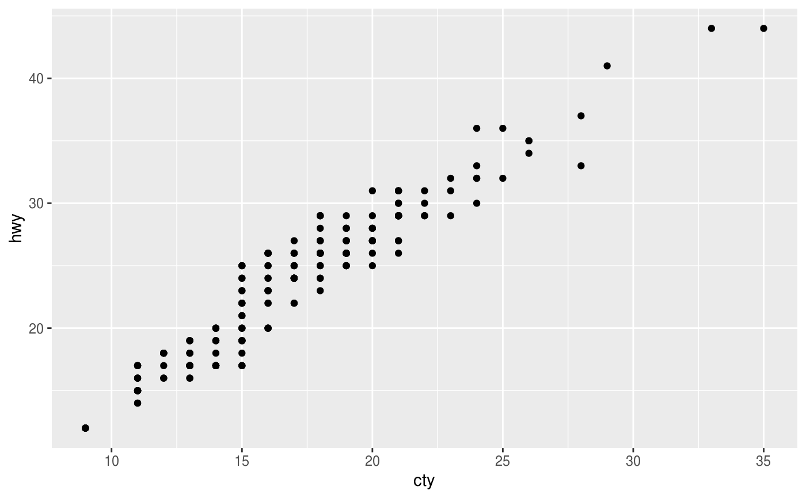
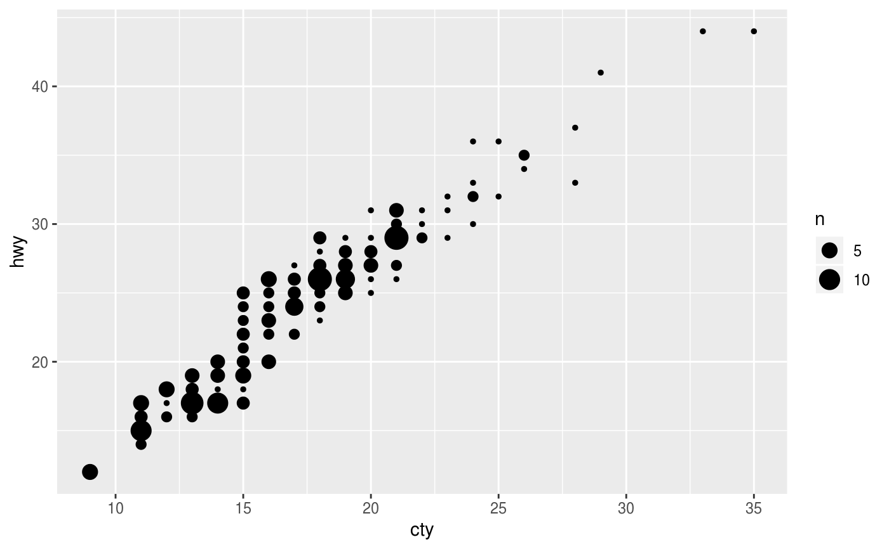
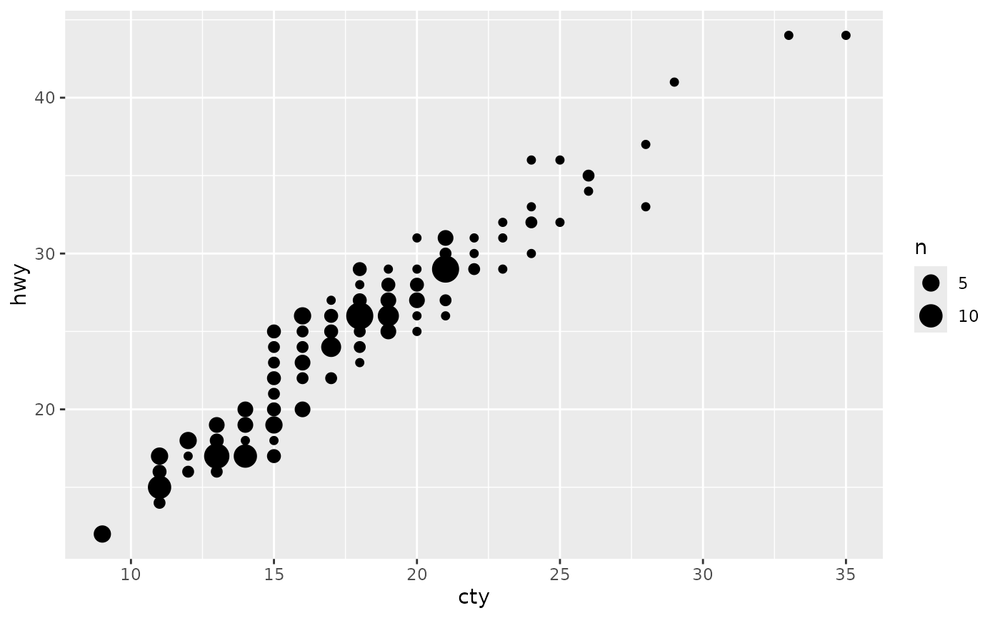
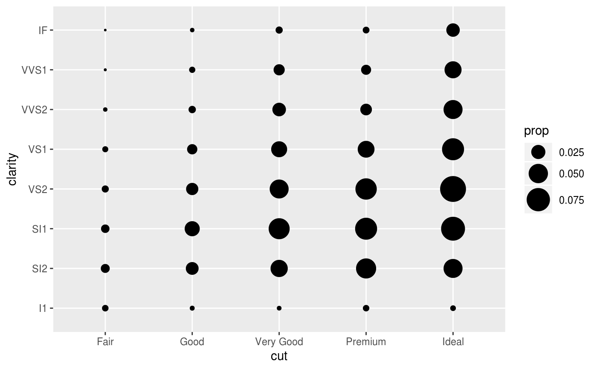
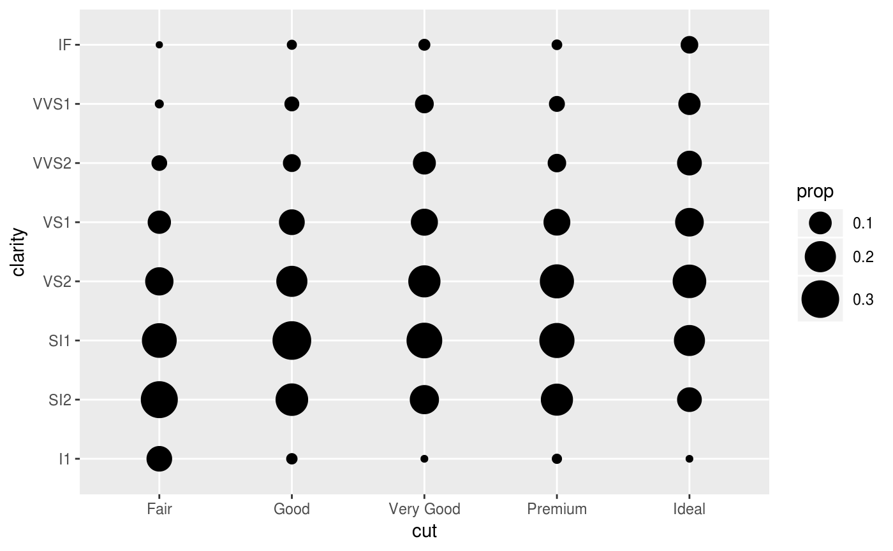
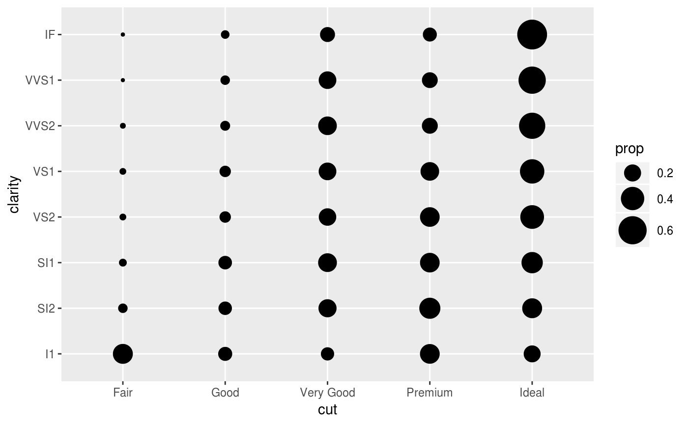

This is a variant geom_point() that counts the number of
observations at each location, then maps the count to point area. It
useful when you have discrete data and overplotting.
geom_count(mapping = NULL, data = NULL, stat = "sum", position = "identity", ..., na.rm = FALSE, show.legend = NA, inherit.aes = TRUE) stat_sum(mapping = NULL, data = NULL, geom = "point", position = "identity", ..., na.rm = FALSE, show.legend = NA, inherit.aes = TRUE)
Arguments
| mapping | Set of aesthetic mappings created by |
|---|---|
| data | The data to be displayed in this layer. There are three options: If A A |
| position | Position adjustment, either as a string, or the result of a call to a position adjustment function. |
| ... | Other arguments passed on to |
| na.rm | If |
| show.legend | logical. Should this layer be included in the legends?
|
| inherit.aes | If |
| geom, stat | Use to override the default connection between
|
Aesthetics
geom_point() understands the following aesthetics (required aesthetics are in bold):
xyalphacolourfillgroupshapesizestroke
Learn more about setting these aesthetics in vignette("ggplot2-specs").
Computed variables
- n
number of observations at position
- prop
percent of points in that panel at that position
See also
For continuous x and y, use geom_bin2d().
Examples
# Best used in conjunction with scale_size_area which ensures that # counts of zero would be given size 0. Doesn't make much different # here because the smallest count is already close to 0. ggplot(mpg, aes(cty, hwy)) + geom_count() + scale_size_area()# Display proportions instead of counts ------------------------------------- # By default, all categorical variables in the plot form the groups. # Specifying geom_count without a group identifier leads to a plot which is # not useful: d <- ggplot(diamonds, aes(x = cut, y = clarity)) d + geom_count(aes(size = stat(prop)))# To correct this problem and achieve a more desirable plot, we need # to specify which group the proportion is to be calculated over. d + geom_count(aes(size = stat(prop), group = 1)) + scale_size_area(max_size = 10)# Or group by x/y variables to have rows/columns sum to 1. d + geom_count(aes(size = stat(prop), group = cut)) + scale_size_area(max_size = 10)